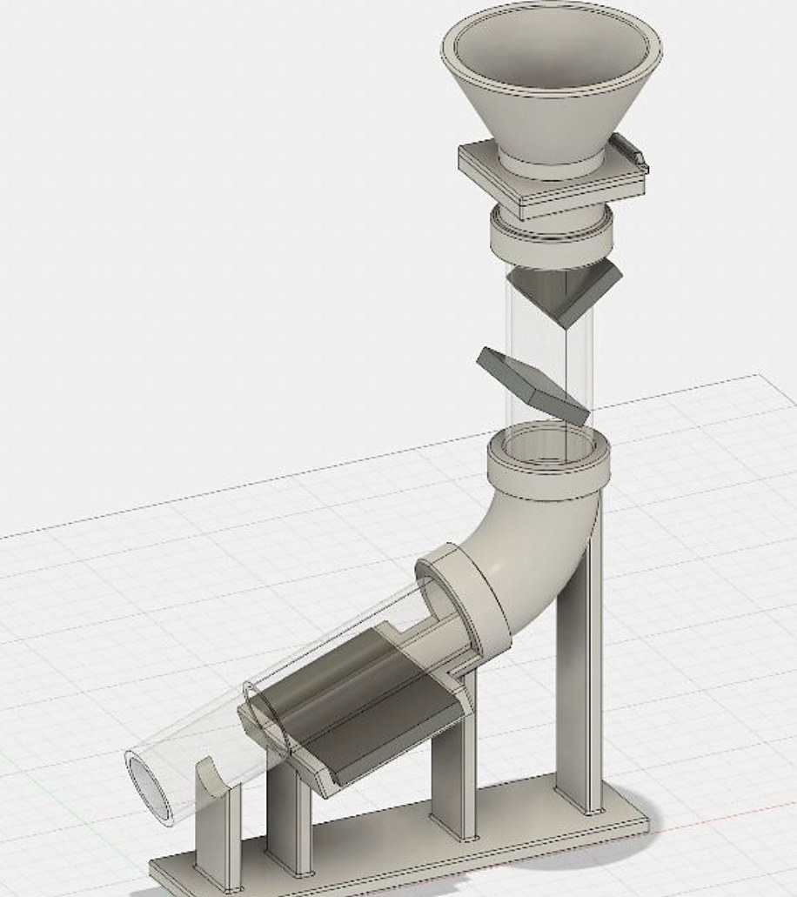
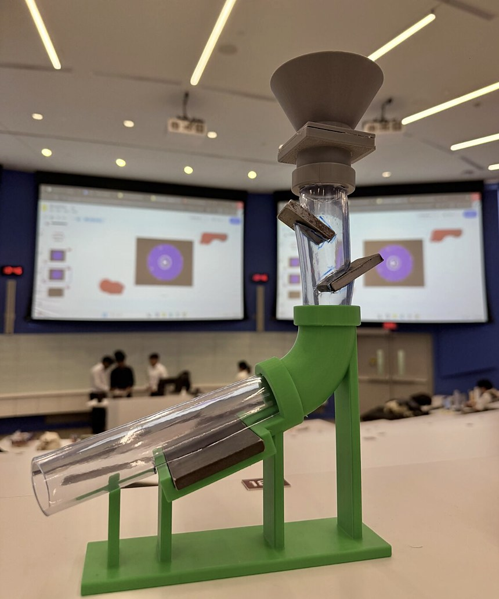
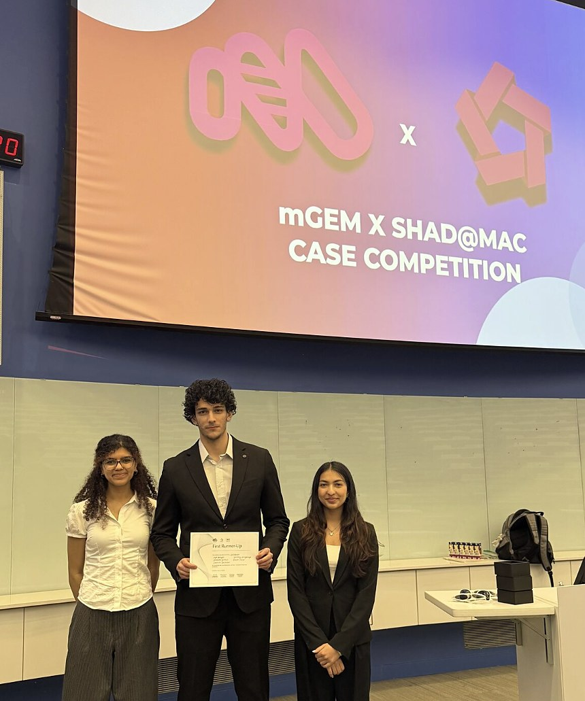
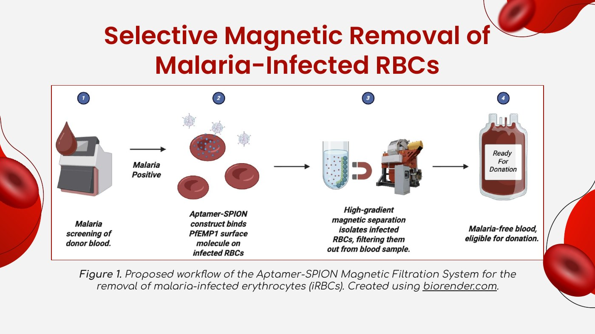
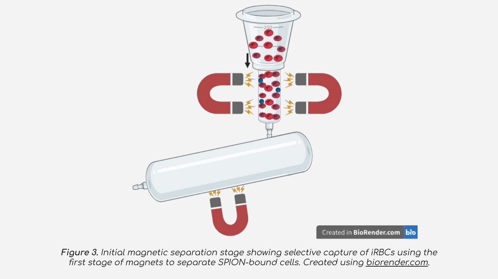
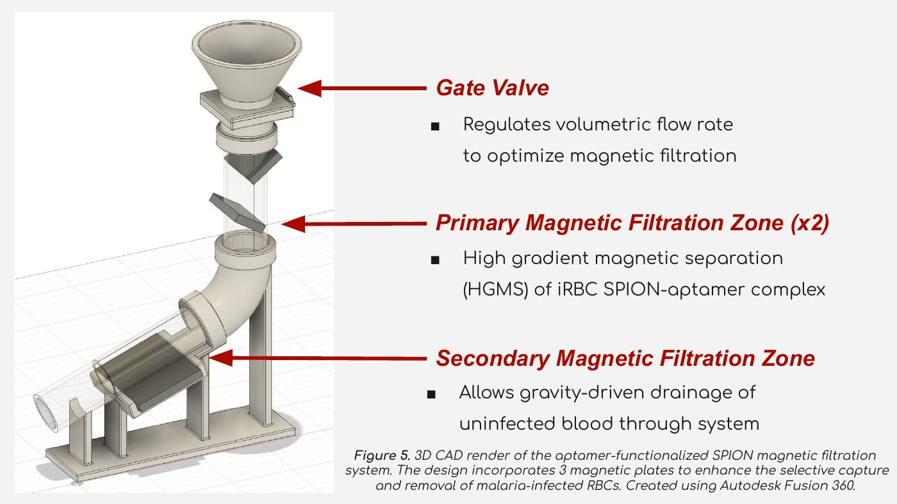

Aptamer-SPION Magnetic Filtration for Malaria-Infected Blood
iGEM McMaster x SHAD at Mac Case CompetitionMar 2026Team of 5
Published as a conference abstract in the URNCST Journal · doi:10.26685/urncst.1125
Read more
The problem: Canadians returning from malaria-endemic regions must wait three months before donating blood, which adds to Canada's blood shortage.
Our solution
- Donor blood is incubated with aptamers bound to superparamagnetic iron oxide nanoparticles (SPIONs). The aptamers bind PfEMP1, a malaria marker on the surface of infected red blood cells.
- A gate valve controls the flow rate into two primary high-gradient magnetic separation zones that capture the tagged cells, and a secondary zone removes remaining debris while uninfected blood drains through by gravity.
- The step fits into the existing donation pipeline after nucleic acid screening and before standard processing and storage.
- Removing infected cells this way could shorten the deferral period and expand donor eligibility.
What we did
- Research. Evaluated diagnostic feasibility, biological implementation, cost per blood unit, and safety requirements such as complete removal of SPIONs before transfusion.
- Prototype. 3D modelled and printed a working model of the filtration pathway to show how the system functions.
- Pitch. Presented our research to judges in Phase 2 of the competition and placed second. This work became my first publication, a conference abstract in the URNCST Journal.





